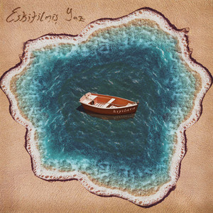

Home
Listening music without ads
Try For Free
Recommended for today
See all
Bu Akşam
Duman
Bodrum
Yüzyüzeyken Konuşuruz
Teşekkür
Batuhan Kordel
#22
Dolu Kadehi Ters Tut

Uyursam Geçer Mi?
Eskitilmiş Yaz
Suggested artist
See all
Tuğkan
Emir Can İğrek
Duman
Mor ve Ötesi
Yüzyüzeyken Konuşuruz
Please using phone or tablet.